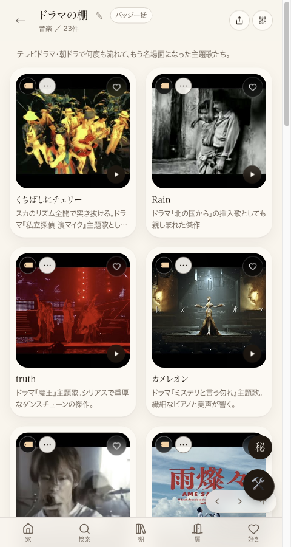
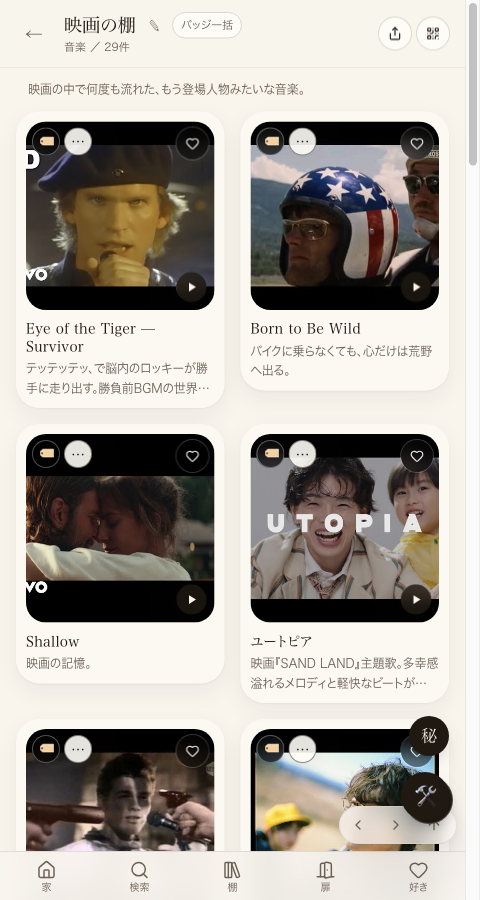

① 何を直したか（1行）
「映画の棚」に混ざっていたテレビドラマ・TVアニメ・特撮の主題歌23件を「ドラマの棚」へ分離し、本番に反映・実機（ブラウザ）で確認した。途中でmain自体のTypeScriptビルドが9/1から失敗し続けてLovableの公開が一切効かなくなっていた根本原因も特定・修理した（副産物）。
② 数字（本番実機で確認・実測）
| 確認箇所 | 直す前 | 直した後（本番・実機ブラウザ） |
|---|---|---|
ドラマの棚（/shelf/music/drama） | 1件 | 23件 |
映画の棚（/shelf/music/movies） | 29件（ドラマ混入・実質6件+DB49件の一部） | 29件・全部映画（Eye of the Tiger, Born to Be Wild, Shallow等） |
対象23件の内訳：テレビドラマ主題歌18件＋TVアニメ/特撮の主題歌5件（タッチ・ONE PIECE「Hope」・BLEACH「D-tecnoLife」・ゴジラS.P「青い」・仮面ライダー「EXCITE」）。
注意：本番ページを機械的に取得する（curl/fetch）と初期HTML（SSR直後）では反映前の数字（1件・6件）のまま見える。これはこのサイトの設計上、棚の中身がブラウザでJavaScriptを実行した後に確定して表示される仕組みのため。実際にブラウザで開いた状態（下のスクリーンショット・実機確認）が本当の本番の見え方。
③ 押せるリンク（本番の実物）
全23件：逢いたくていま(MISIA)・裸の心(あいみょん)・カメレオン(King Gnu)・雨燦々(King Gnu)・阿修羅ちゃん(Ado)・雨のち晴レルヤ(ゆず)・HELLO(福山雅治)・truth(嵐)・Make-up Shadow(井上陽水)・ここにしか咲かない花(コブクロ)・Rain(José Feliciano)・To Love You More(Celine Dion)・くちばしにチェリー(EGO-WRAPPIN')・サニーサイドメロディー(EGO-WRAPPIN')・花唄(TOKIO)・キラキラ(オフコース)・旅路(藤井風)・燦燦(三浦大知)・タッチ(岩崎良美)・Hope(安室奈美恵)・D-tecnoLife(UVERworld)・青い(ポルカドットスティングレイ)・EXCITE(三浦大知)
④ 本番スクリーンショット（実機ブラウザ・直した後）


今回、実際に試した経路・見つけた原因（すべて）
src/lib/tasteLedger.tsとsrc/routes/feature.final-view.tsxの型エラー2件）。両方修理してmainへ反映、ビルド成功を確認。extends_shelf_id="movies"という別経路でデータが届く実装になっており、その経路には除外ロジックが適用されていなかった。両方の経路に除外ロジックを適用するよう修正。curl/fetchで見ると反映前の数字に見えて混乱したが、実機ブラウザ（JS実行後）で確認したところ正しく反映されていたことを特定した。状態
①コード側の実装：完了・本番反映済み ②main合流：完了（d9af294d） ③Lovable公開：実行済み・実機で反映確認 ④実機ブラウザでの見た目確認：完了（本ページのスクリーンショット）